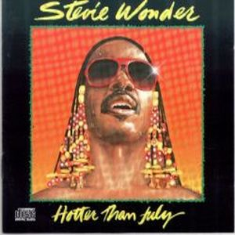
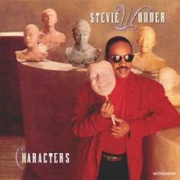
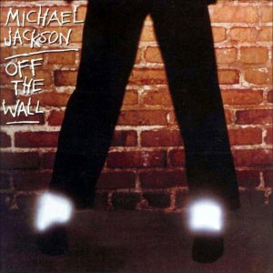
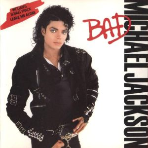
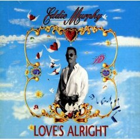

|
1974-Fulfillingness' First Finale
(Background in You Haven't Done Nothin' with the Jackson 5) |
|  | 1980-Hotter Than July
(Background in the song All I Do) |
|  | 1987-Characters
(Duet in the song Get It) |
|  | 1979-Off The Wall
(Composition and keyboards on I Can't Help It in the album of Michael) |
| 1985-Usa For Africa
(Humanitarian collaboration through the song We Are The World) |
|
| 1982-Donna Summer
(Background in the song with more artists on State Of Independence from Donna Summer's album) |
|
|  | 1987-Bad
(Duet on the song Just Good Friends in the album of Michael Jackson) |
|  | 1993-Love's Alright
(Background and harmonica with more artists on the song Yeah in the album of Eddie Murphy) |